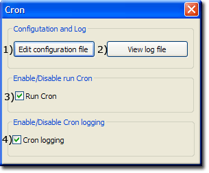

|
|
CRON |
Cron originated in the Unix environment. It is a job scheduler, allowing scripts to be run automatically at a certain time or date. The name was based on the Greek word for time, "chronos" .
The Uniform Servers portable Cron plugin has been integrated into Uniform Server Zero. Cron's configuration file has been pre-populated with various scripts to be run. These are essentially four-line templates that require enabling to run the appropriate applications from the Cron script.
The Uniform Server Zero provides a simple user control interface to start and stop Cron.
Features
- Configuration file pre-configured for common applications.
- Run Cron as a standard program
- Run scripts with the following file extensions: .bat, .vbs and .php
- Pre-configured to run DBbackup and Drupal cron jobs
Configuration file
Each script to be run requires a configuration entry in the configuration file cron.ini. Open this file in the default editor using UniController as follows:
Extra > Cron
|
[drupal] start = 2012-09-21 2:30:00 period = hourly path = http://localhost/drupal/cron.php ref = [Test_cron_1] start = 2012-4-1 23:35:00 period = 10 path = C:\UniServerZ\home\us_cron\test\test_cron_1.bat ref = [Test_cron_relative] start = 2013-4-25 22:00:00 period = 10 path = \home\us_cron\test\test_cron_1.bat ref = |
Configuration block format
| [drupal] | -- | Each block starts with a unique name enclosed in square brackets. Note that no spaces are allowed. |
| start = | -- | Initial start time with the following format: Y-M-D H:M:S - Note: 24 hour clock. |
| period = | -- | How often to run the script from the above referenced start time Values: hourly, daily, weekly, monthly or numeric in seconds |
| path = | -- |
a) For a web application, the full URL of the script. e.g. http://localhost/drupal/cron.php b) Command-line (CLI) option 1: Use an absolute path with back-slashes e.g. C:\UniServer\uni_con\cron\test_cron_1.bat c) Command-line (CLI) option 2: Use a relative path with back-slashes e.g. \home\us_cron\test_cron_1.bat |
| ref = | -- | A timestamp updated by cron script. Set initial value to blank |
| Note 1: | Cron automatically updates ref. It initially adds period as set above to Start time. For subsequent runs, it sets ref to current time + period. |
| Note 2: | To change start time, first set a new value for start and delete the ref number, then save the file. The script will run at the new date and time set and thereafter at the rate you defined for period. |
| Note 3: | To use pre-configured web blocks for drupal and moodle, uncomment to enable. |
| Note 4: | Command-line paths starting with \ followed by sub-folders bellow UniServerZ are portable. Paths outside UniServerZ are not portable and require manually changing after relocating Uniform Server Zero. |
Cron Controller
The Uniform Server Zero provides a simple user control interface to start and stop Cron. Open this controller as follows:
Extra > Cron
|
The Cron Controller consists of two buttons and two check boxes s shown on the right
Note: Initially, both Run Cron 3) and Cron logging 4) check boxes are unchecked. |
 |
Logging
Cron logs the following information:
- Time Cron was started
- Start time and path of a script that is run.
- Time Cron was stopped. Note: if this is missing from the log, it means UniController was not closed before the PC was turned off.
Note: Cron logging is disabled by default.
Additional information
Cron, run and logging are disabled by default. Instead of using the Cron controller covered above you can directely edit the server configuration file/
To enable both Cron running and logging proceed as follows:
|
[CRON] ; Run Cron ; true - Run Cron ; false - Disable (stop) Cron (default) enable_cron=false ; Cron logging ; true - Enable logging ; false - no logging (default) cron_logging=false |
Test Scripts
Four test files have been included and pre-configured in Cron’s configuration file.
The following three scripts are simple command-line script creating a text file when run.
- UniServerZ\home\us_cron\test\test_cron_1.bat File created: UniServerZ\home\us_cron\test\test_cron_1_result.txt
- UniServerZ\home\us_cron\test\test_cron_2.vbs File created: UniServerZ\home\us_cron\test\test_cron_2_result.txt
- UniServerZ\home\us_cron\test\test_cron_3.php File created: UniServerZ\home\us_cron\test\test_cron_3_result.txt
Copy the fourth script UniServerZ\home\us_cron\test\cron_test.php to root folder UniServerZ\www File created UniServerZ\www\us_cron_test_4.txt
Summary
The above has shown how easy Cron is to use and configure.
Note: Database scheduled backups (cron) are performed using phpMyBackupPro.